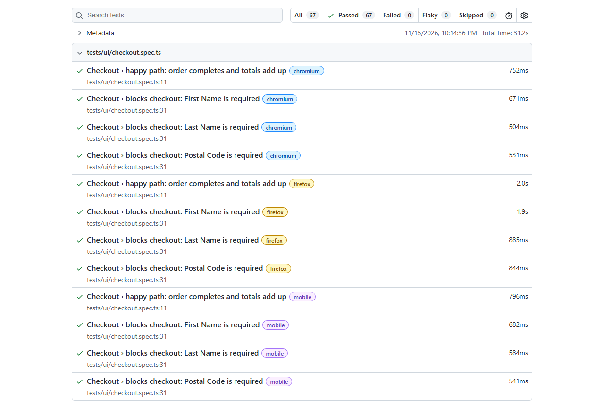
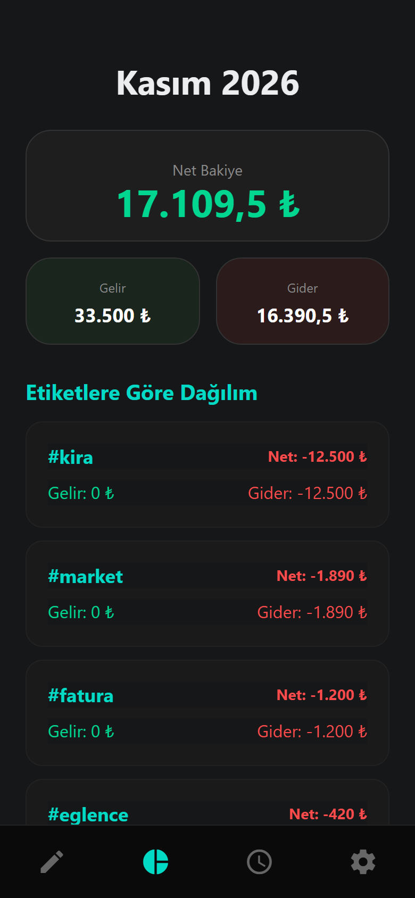
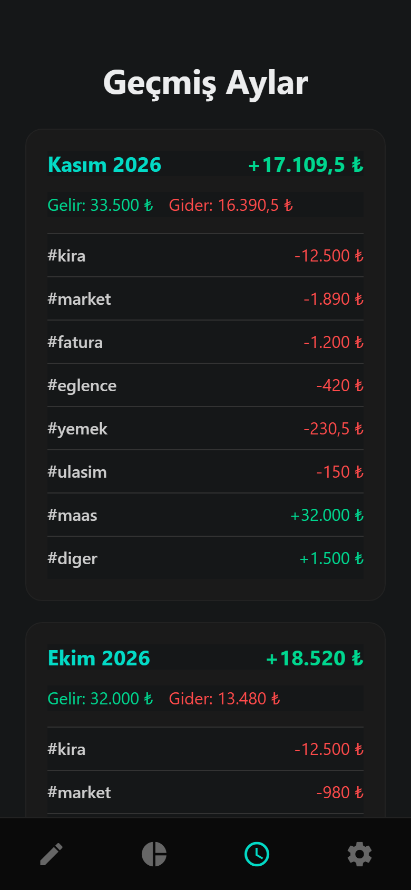
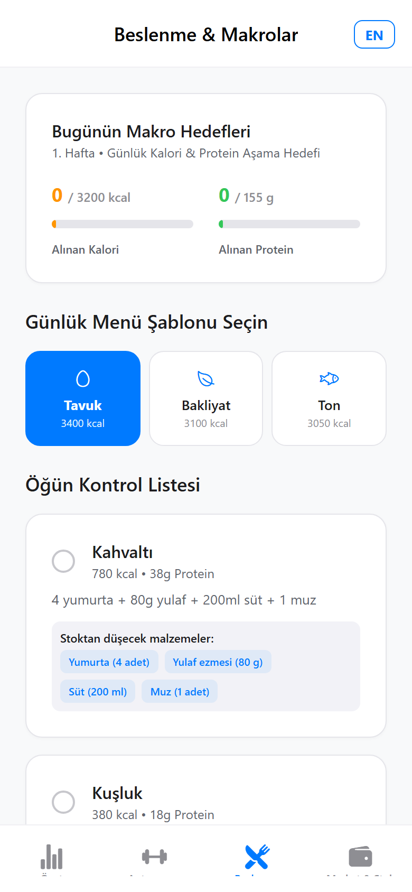
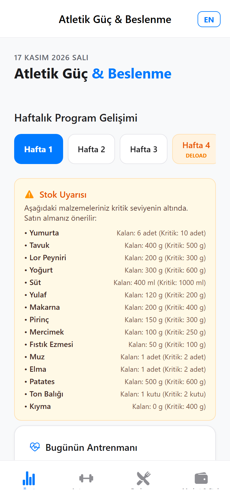
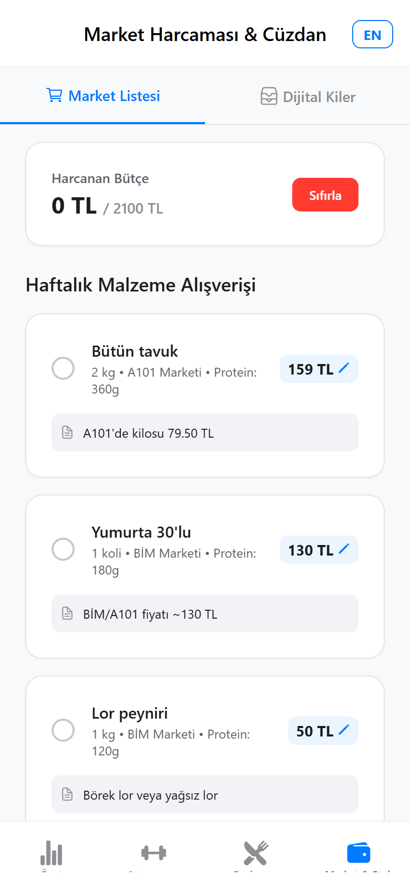

01
↗
BUGBOARD
Full-stack bug tracker with a tested REST API. Next.js, Express, PostgreSQL; Jest + Newman tests, Docker and CI.
Hello, I'm
DEVELOPER &
BUG HUNTER.
Backend & frontend developer from Türkiye. I build APIs, databases and the UIs on top of them, then I try to break them the way a curious user would.
// selected work
Full-stack bug tracker with a tested REST API. Next.js, Express, PostgreSQL; Jest + Newman tests, Docker and CI.

67 Playwright tests on 3 browsers, page objects, written bug reports, nightly CI and a live report.
$ logsleuth examples/app.log 12 lines · 3 WARN · 4 ERROR · 1 FATAL 1. [FATAL] x1 connection pool exhausted (max <n>) 2. [ERROR] x3 payment provider timeout for order <uuid> seen 09:01:15 → 09:05:00
Rust CLI that groups, counts and ranks the problems in your logs. CI gate, JSON output, binaries for 3 OSes.
# messy notes checkout crashes when i apply coupon expected: 10% discount actual: white screen, TypeError ──▶ ## Checkout crashes when i apply coupon Severity: 🟠 high · Component: checkout ### Steps · Expected · Actual · Env
Messy notes in, reproducible bug report out. Offline rules or Claude with structured outputs, validated by Pydantic.



Notebook-style income & expense tracker. Type a line, tag it, see the totals. Phone and web, TR/EN.




12-week training plan with rest timers, nutrition macros, grocery budget and pantry. TR/EN.
Local mod for the game Brotato: hotkeys for materials, stats and levels, one-click Windows installer, release zips built by CI.
// by the numbers
automated tests across my projects: UI, API, unit and end-to-end.
// the journey
Turkish documentation for AI and developer-tool projects; several pull requests merged upstream.
Web/Multimedia Management and Webmaster. Full-stack, mobile and test automation projects on the side.
Kept people and machines working: troubleshooting, setup and clear reports of what broke and why.
Open to remote work, internships and collaboration. Have a bug that nobody can reproduce? Even better.
Say hi on GitHub →